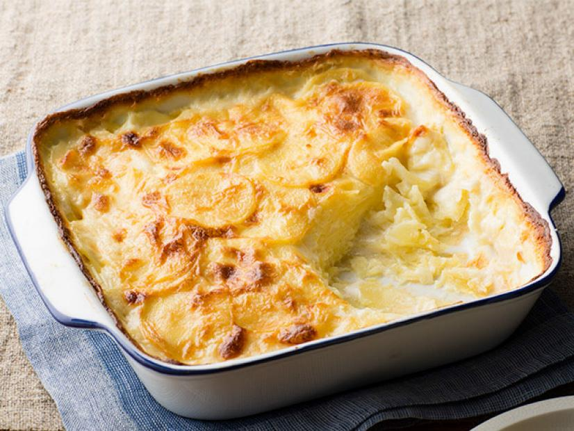

Home
Scalloped Potatoes

Description
Creamy, cheesy and perfectly indulgent, scalloped potatoes are a classic for good reason. While cooking, the starch from the potatoes thickens the cream into a luscious sauce while the cheesy topping becomes golden and nutty in the oven. Allowing the casserole to rest for 10 minutes before serving makes it easier to slice.
Ingredients
- 2 tablespoons unsalted butter, plus more for the baking dish
- 4 medium russet potatoes (about 2 pounds)
- 1 1/2 cups heavy cream
- 1/2 cup whole milk
- 2 cloves garlic, minced
- 1/2 teaspoon fresh thyme leaves
- Kosher salt and freshly ground black pepper
- Pinch freshly grated nutmeg
- 1 cup shredded Gruyere (about 4 ounces)
- 1/2 cup finely grated Parmesan (about 1 1/2 ounces)
Steps
- Preheat the oven to 350 degrees F. Grease an 8-inch square baking dish with unsalted butter.
- Peel the potatoes and cut them into 1/8-inch-thick slices using a mandoline or sharp knife.
- Add the sliced potatoes, heavy cream, whole milk, 2 tablespoons butter, garlic, thyme, 1 1/2 teaspoons salt, 1/2 teaspoon pepper and the nutmeg to a medium saucepan. Bring to a simmer over medium heat and cook, stirring occasionally, until the potatoes are tender and almost cooked through but still hold their shape, about 5 minutes. (They should not be soft and falling apart.) Remove the saucepan from the heat.
- Add the Gruyere and Parmesan, stirring gently to combine. Pour the potato mixture into the prepared baking dish. Bake until the top is light golden brown and the potatoes are cooked through and tender, about 45 minutes. Let rest for 10 minutes before serving.